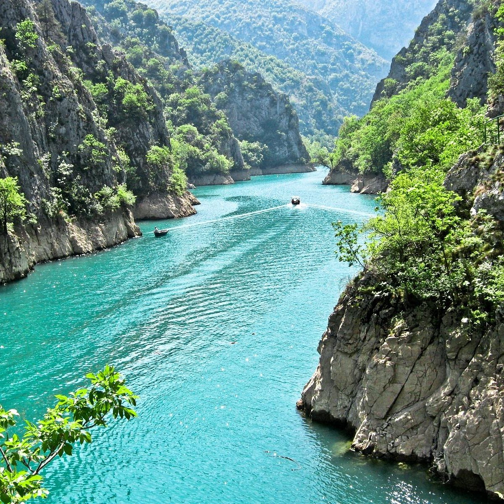
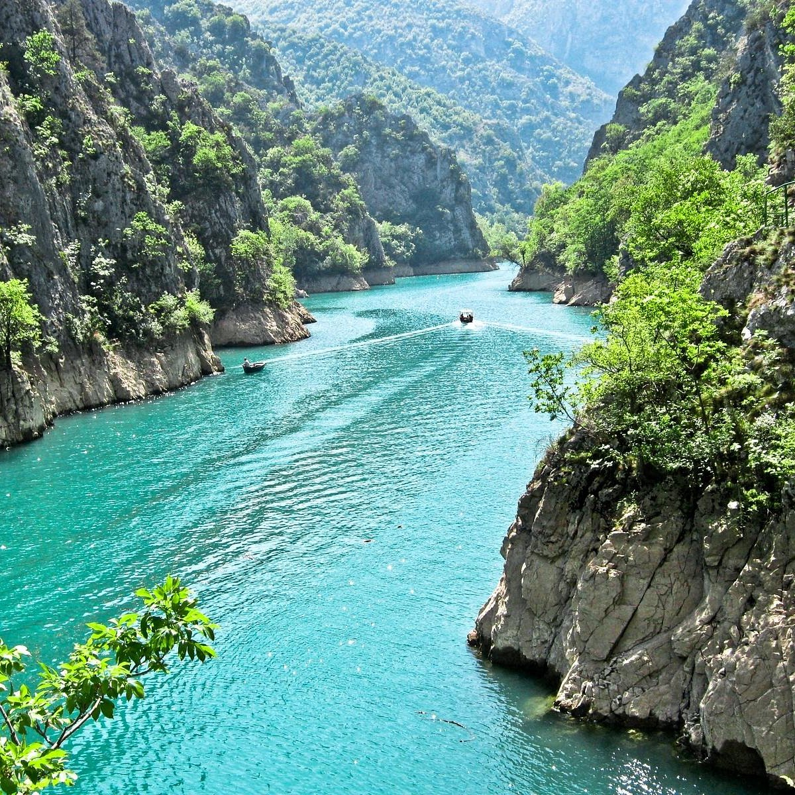
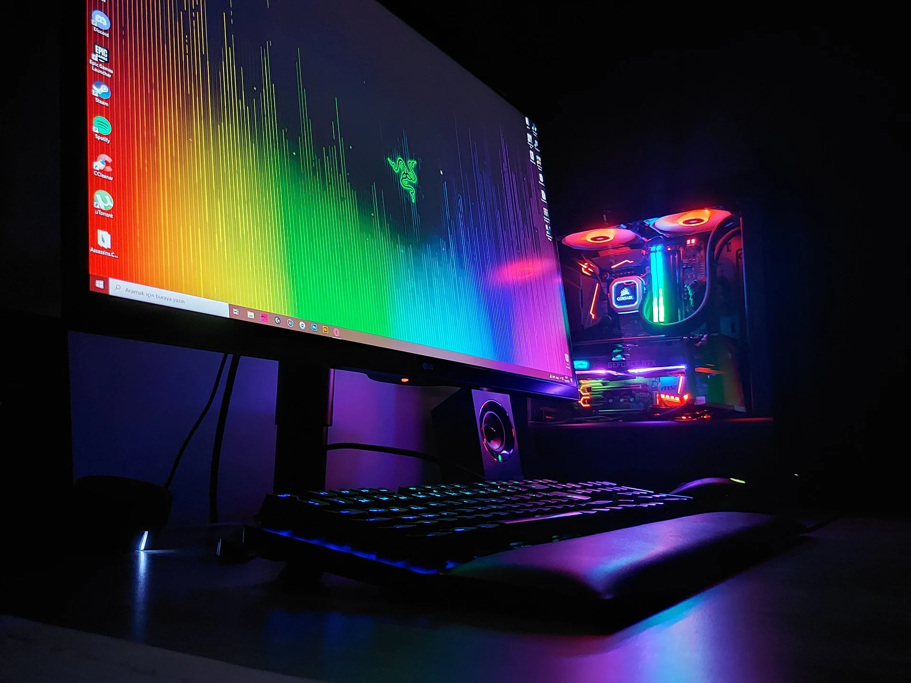
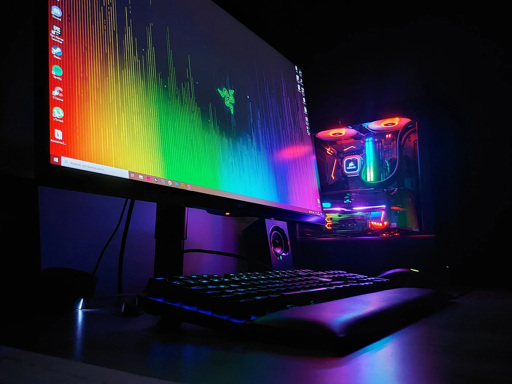

My name is Vasko Stojanov
Welcome to my website.
Hello! My name is Vasko Stojanov. I was born in Strumica, Macedonia. I'm a 20-year-old aspiring software developer with a passion for technology, gaming, and adventure. I've always been fascinated by how things work and enjoy creating solutions to everyday problems through coding. My early life was filled with joy, curiosity, and a bit of mischief. I attended st.Ciril and Methodius Elementary School, where I discovered my love for computers. My parents, encouraged me to explore my interests, which led me to spend countless hours tinkering with gadgets and learning basic programming. High school was a transformative period for me. I attended Nikola Karev High School, where I joined the Computer Science Club and participated in various hackathons and coding competitions. These experiences not only honed my technical skills but also taught me the importance of teamwork and perseverance. Currently, I am a at the University of Ss. Cyril and Methodius University in Skopje (UKIM). College life is a whirlwind of new experiences, challenges, and growth. I've the opportunity to work on exciting projects, such as developing a mobile app for campus navigation and creating a website for a local non-profit organization. Balancing academics, part-time jobs, and extracurricular activities has demanding, but it has also been incredibly rewarding.
Traveling has always been a significant part of my life, offering both relaxation and adventure. I've had the opportunity to explore numerous places across the Macedonia and beyond, each journey leaving a lasting impression. These travels have broadened my horizons, teaching me about diverse cultures and perspectives, and have significantly contributed to my personal growth and understanding of the world.
 

Santorini! This is one of the most beautiful places I have ever visited. Santorini is a small, round archipelago of volcanic islands located in the southern Aegean Sea, about 200 km southeast of mainland Greece. It is also known by the name Thera
Vodno is a mountain in Macedonia. It is located in the northern part of the country, to the southwest of the capital city Skopje. The highest point of the mountain is at Krstovar peak, on 1066 meters and the submontane is on 337 meters (Middle Vodno is on 557 m). In 2002, on Krstovar peak the Millennium Cross was built, one of the biggest Christian Crosses in the world.
Ibiza is a Spanish island in the Mediterranean Sea off the eastern coast of the Iberian Peninsula. It is 150 kilometres (93 miles) from the city of Valencia. It is the third largest of the Balearic Islands in area, but the second-largest by population.Ibiza is well known for its nightlife and electronic dance music club scene in the summer, which attract large numbers of tourists.
Matka is a canyon located west of central Skopje, Macedonia. Covering roughly 5,000 hectares, Matka is one of the most popular outdoor destinations in Macedonia and is home to several medieval monasteries. The Matka Lake within the Matka Canyon is the oldest artificial lake in the country.
Hobbies In my free time, I engage in a variety of hobbies that keep me both physically active and mentally stimulated. One of my favorite pastimes is playing handball. Ever since I picked up the sport in high school, it has been a great way to stay fit, build teamwork skills, and enjoy friendly competition. For four years I actively played handball with the team of Astraion in the Macedonian first league as well as one year in the Super League.
 

Another passion of mine is working with computers. From an early age, I've been fascinated by technology and how it can be used to solve problems and create new possibilities. I enjoy building and customizing PCs, exploring the latest software, and staying updated with advancements in the tech world. Whether I'm coding a new project, gaming, or simply tinkering with hardware, working with computers is both a hobby and a learning experience that constantly keeps me engaged and inspired. Building and customizing PCs has taught me a lot about the intricacies of computer hardware. I love choosing the right components, assembling them, and seeing how different configurations affect performance.Coding is a significant part of my life, too.
Food holds a special place in my life, and I have a few favorite dishes that always manage to bring me joy. One of them is traditional Macedonian cuisine, which reminds me of home and family gatherings. My top Macedonian dishes are tavče gravče and ajvar. Tavče gravče is a simple yet incredibly tasty dish made from beans, cooked with various spices, and often served as a main course or a side dish. Ajvar, on the other hand, is indispensable, especially when it is prepared in the autumn and enjoyed with warm bread and cheese. Besides Macedonian cuisine, I have a deep appreciation for Italian food, particularly pizza and pasta. My favorite is the classic Margherita, with its simple combination of tomato, mozzarella, and basil. As for pasta, I can never resist spaghetti carbonara – a straightforward dish made with eggs, pancetta, and Parmesan, which is always rich and creamy.